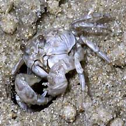
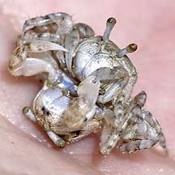
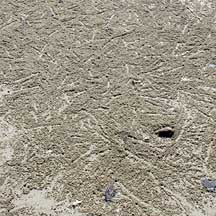
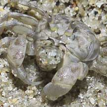
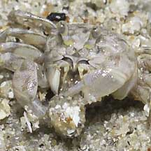

|
|
| crabs text index | photo index |
| Phylum Arthropoda > Subphylum Crustacea > Class Malacostraca > Order Decapoda > Brachyurans > Superfamily Ocypodoidea |
| Sand
bubbler crab Scopimera and Dotilla spp. Family Dotillidae updated Dec 2019
Where seen? This tiny ball-shaped crab is often seen on our sandy shores, just below the high water line. Resembling the little sand balls that it creates all over the shore at low tide, the crab itself is often missed. It is also very nervous and disappears instantly into its burrows at the slightest sign of danger. To spot these crabs, you will have to wait quietly next to their burrows. Stay low and avoid casting a shadow over the burrow. In a few minutes, they will appear. If you stay still, they will go about their amusing business. Do avoid stepping on sand balls on the shore as you might be stepping on a little crab! Features: Body width 1-1.5cm. Body spherical with eyes on short stalks. These can fold away into grooves along the bodies when the crabs scurries into its burrow. Pincers long, flattened and downward-pointing. Males may have larger and longer claws than females. The crab is generally the same colour and pattern as sand. It has stiff hairs on the legs which absorb water from the wet sand. This allows the crab to stay out of water for some time. |
 Chek Jawa, Feb 05 |
 Mating sand bubbler crabs held in the hand. Chek Jawa, Sep 03. |
 Shore covered with tiny balls of sand created by busy sand bubblers. Chek Jawa, Apr 07 |
| What does it eat? The sand bubbler
crab eats the thin coating of edible particles on sand grains. Sand
grains are scraped up with the downward pointing pincers and brought
to the mouthparts that sift out these tiny particles. The shifted sand is then discarded in a little ball. As
it processes sand, a little path is scraped out from the burrow entrance.
Little balls of sifted sand is piled up on either side of this path. Sand patterns: Sand bubbler crabs are responsible for the delicate patterns of tiny balls on the sandy shores at low tide. The crabs emerge as soon as the tide recedes. You can almost tell how long the tide has been out by the patterns of their sand balls. The more intricate the pattern of sand balls, the longer the tide has been out. |
 Chek Jawa, Mar 05 |
 Creating little balls of sand. |
 |
| Status and threats: Our sand bubbler crabs are not listed among the threatened animals of Singapore. However, like other creatures of the intertidal zone, they are affected by human activities such as reclamation and pollution. Trampling by careless visitors also have an impact on local populations. |
 |
| Sand bubbler crabs on Singapore shores |
On wildsingapore
flickr
|
| Other sightings on Singapore shores |
Links
|